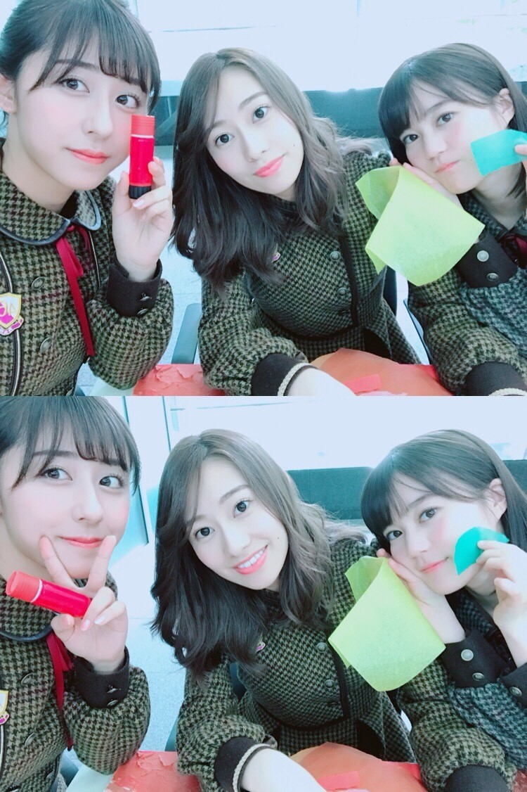
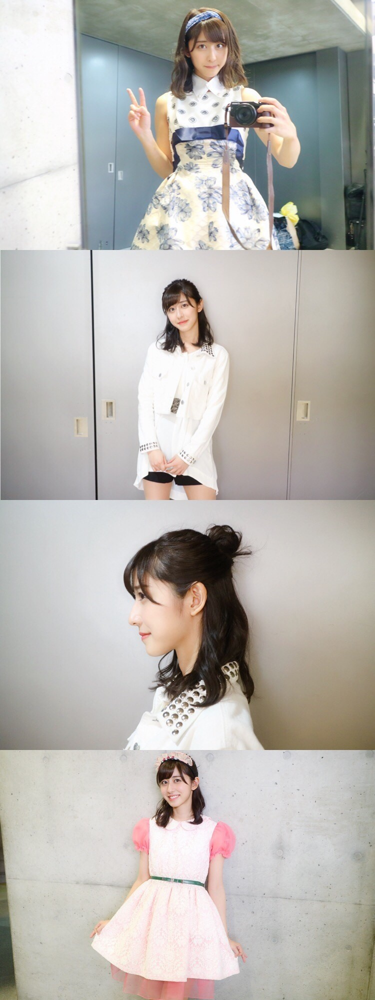
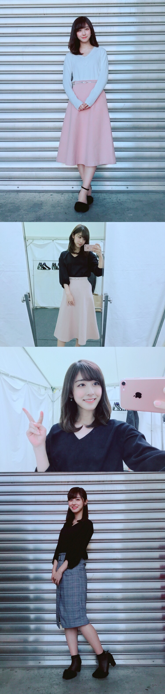

| 2018/03 30 Fri | 3月も終わり |
3月末になり、ぽかぽか陽気で
桜の季節になりましたね！
お花の中で一番好きな桜。
桜を見るには上を見上げなきゃいけないから
自然と前向きな気分になれますね
だから私は笑顔が溢れる桜の季節が好きなんです
そして私ごとですが4月からは無事、
大学4年生になれることが決定しました！
いつも応援ありがとうございます。
後期も単位を落とさず、残すところはあと卒論のみです。
卒論は大変と聞きますが...残りの大学生活も頑張っていきたいと思います！
3月は46時間テレビがありました！
無事完走できて良かったです。
楽しみつつも一生懸命のメンバー、
寝ずに支えてくださったスタッフの皆さん、
盛り上げに来てくださった有名人の皆さん、
そして見てくださった皆さんに感謝です！
とても楽しかったです\♡/

ちぎり絵、後々完成したのを見たら感動した...
みんなで１つのものを創り上げるのは達成感がありますね！青春だ〜

パクチー嫌いのいくちゃん。
沢山食べさせてごめんね( ´ｰ`)
でもいくちゃんのおかげで楽しかったです( ´ｰ`)
また、ラストにはパクチーを食べるいくちゃんの
満面の笑み(⁉︎)も激写できました！
そして46時間と並行されて行われたアンダーアルバム個別握手会。
眠い中来てくださった皆さん本当にありがとうございました！！

今回は私が個人的に好きな、思い入れのある衣装を着てみました！
1部 シークレットグラフィティー
衣装はもちろん、楽曲もMVも全て好き。
2部 狼に口笛を
初めてのMV撮影の思い入れがあるしこのハードロックな衣装が好きだから！
3部 13日の金曜日
大好きなピンク。そして普段は着ないラブリーな衣装が着たくなりました！
3/17 東京ビックサイト個別握手会

白ニット、黒のブラウス、ピンクのスカート、チェックタイトスカートを組み合わせて
きれいめな私服にしてみました。
髪の毛もふんわり内巻きと
ハーフアップで大人っぽく！
3/21 京都パルスプラザ個別握手会

薄い色のデニムをベースに、
茶色のリブニットとZARAさんのピンクのスウェットを！
葉月とたまたまお揃いだったハーフアップお団子で少しだけガーリーに。
New Eraさんの帽子を合わせてストリートっぽく。
帽子はデニムに合わせた色にしました！
そして密かにずっとファンだったNew Eraさんの雑誌に掲載させていただきました...！
「The New Era® Book / Spring & Summer 2018」
とても嬉しいヽ(；；)丿
妹と一緒に帽子とリュックをよく使わせてもらってるのです！
発売中なので、良かったら見てください。
明日は19枚目最後の全国握手会。
また、真洋が乃木坂46最後の日です。
卒業してもずっと仲良しだけど
乃木坂としてお仕事を一緒にするのは最後。
7年半一緒だったから寂しいな...
真洋にとって良い日になりますように。
明日お待ちしております！
斎藤ちはる
コメント(623)
2018/03/30 20:36